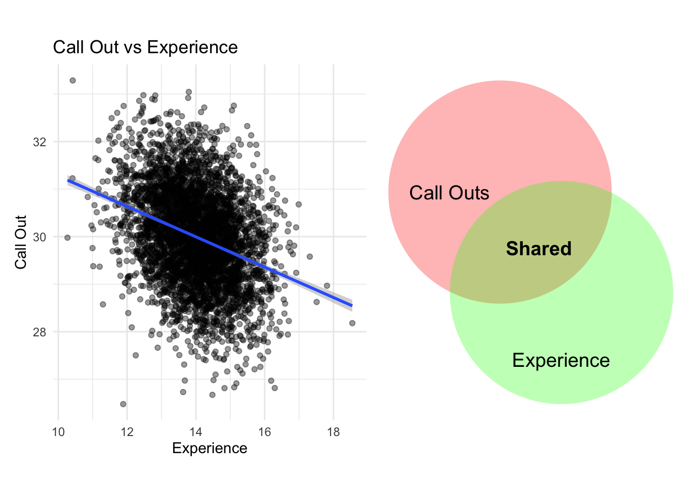
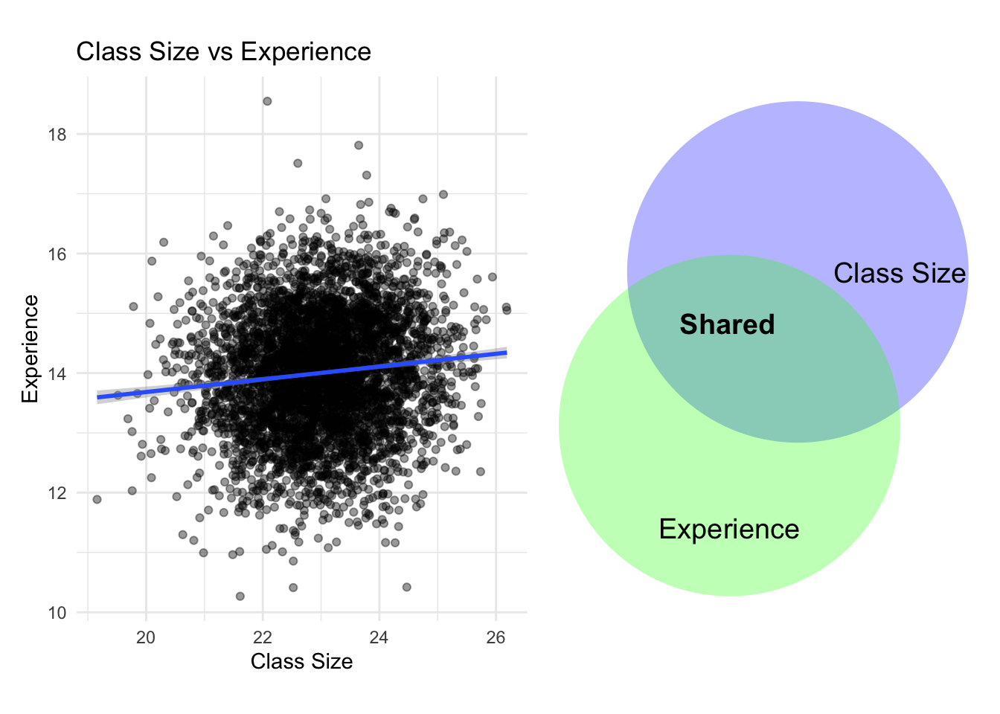
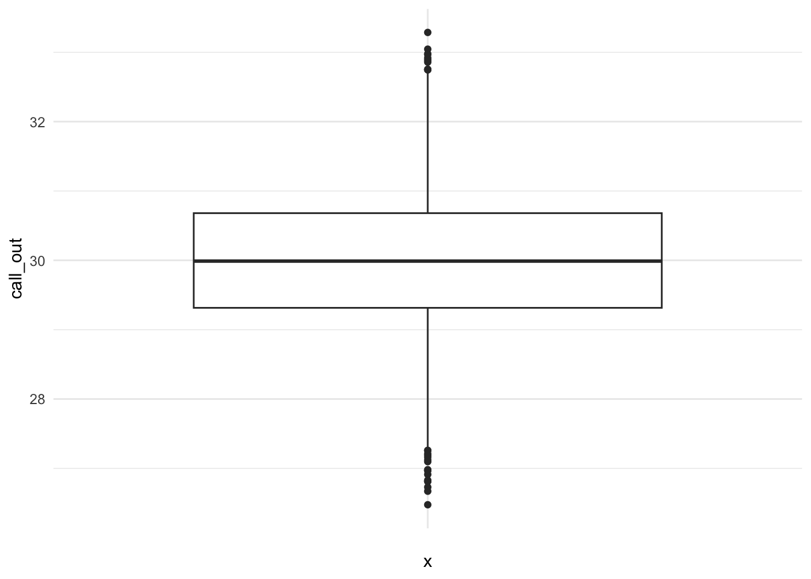
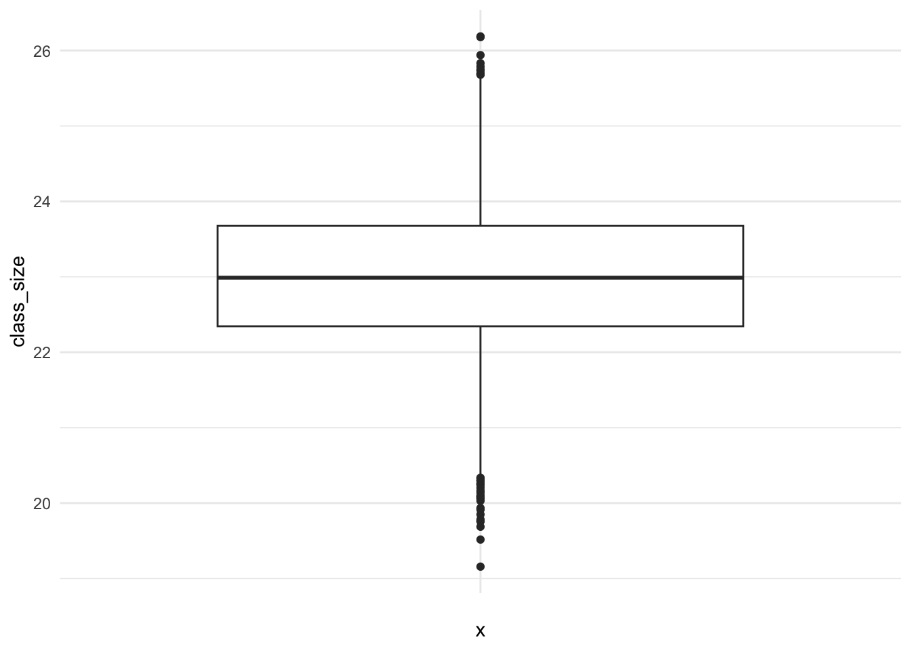
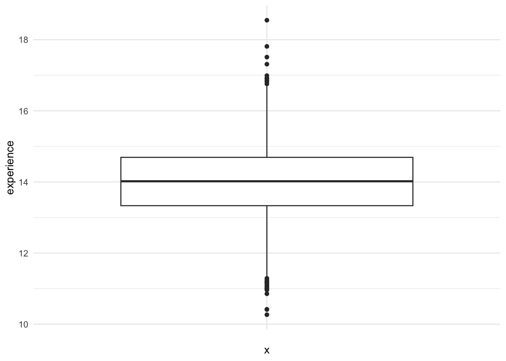

library(ggplot2) #use this package to create venn diagram
library(grid) #use this package to create venn diagram
library(dplyr) #use this package with ggplot to create graphs and summarize data
library(MASS) #use this package for creating multivariate normal distributions of variables
library(readr) #use this package for reading in the data that had a csv extension
library(psych) #use this package for describe function one of my favorites for descriptive statistics.
library(patchwork) #use this package to print images side by side using a + symbol - so handy!
library(MissMech) #use this package to run a Hawkin's test for MCAR, where normality is not assumed"
library(naniar) #use this package to identify and visualization missing data
library(mice) #use this package to create imputed data sets
library(tidyverse) #use this package for cleaning data, using pipes %>%, so many packages and functions in one library <3
library(rstatix) #use this package to run boxplots and identify outliersPartial and Semi Partial Correlations
Overview
In this weeks lab, we are going to review Pearson’s partial and semi-partial correlations using simulated data inspired from a teacher-burnout study conducted by Saloviita and Pakarinen (2021). Using partial and semi partial correlations we will investigate the relationship between the number of teacher call outs related to class size, while also taking into consideration or controlling for the number of years of classroom experience. Prior to conducting these techniques, we are going to review how we can handle missing data and identify and deal with outliers.
Packages
Define: Partial Correlations Goal
Goal: Determine the relationship between two continuous variables after accounting for the influence of a continuous third variable, sometimes referred to as a extraneous factor.
- Partial correlation is the contribution of a predictor after the contributions of the other predictors have been taken out of both that predictor and the DV (Dong, Week 9).
We are going to control for the number of years of teacher experience, a confounding variable while evaluating the relationship between teacher call outs and class size.

Hypotheses
HO: \(\rho_{yx.c}= 0\); The relationship between the number of teacher call outs and total number of students are not related after considering the influence of the number years of experience.
HA: \(\rho_{yx.c} \neq 0\); The relationship between the number of teacher call outs and total number of students are related after considering the influence of the number of years of teacher experience
Assumptions of Pearson Correlation
- Linearity
- The relationship between pairs of of variables goes in one direction, monotones. There is an absence of a curve linear relationship.
- Use scatterplots to evalaute the assumption of linearity.
- Independence
- Observation responses are independent of one another. Data are not repeated measures from the same individual.
- Make sure you understand how the data were collected.
- Normality
- The distribution of variables are normally distributed.
- Use histograms and QQ-plots to evaluate the normality assumption.
- No Outliers
- Extreme responses could influence Pearson correlation coefficient-identify and remove them.
- Using plots, identify extreme data points.
Technique using Linear Model Regession Residuals
A partial correlation can be obtain by correlating the residuals of the main variable and all other main variables after controlling for the extraneous variable.
Residuals: whatever variance that is remaining or unexplained after predicting an outcome from some variable. Residuals are the differences between the regression line and the actual data. Residuals are the portion of teacher call-outs that remains unexplained after accounting for years of experience.
We need to standardize the data set in order to interpret the coefficients as effects. Again, standardized regression coefficients are equal to partial correlation because correlation is covariance on standardized data.


Example Partial Correlation with Missing Data
Read in the data
# Read in the data using the read_csv
T_df_missing <- read_csv("missing_teacher_data.csv")
teacher_data <- read_csv("complete_teacher_data.csv")Wrangle the data (descriptive statistics)
The process of cleaning data is also known as data wrangling. During this part of the data analysis process we conduct procedures to “tidy” our data - every column is variable and every row is an observation. You should address issues such as invalid values, missing data, and data format issues.
- Describe the data using the describe function in the psych package to calculate basic statistics mean, median, etc., and find invalid values, missing data, and any format issues.
#Use the describe function in the psych package an output will provide the sample size, mean, standard deviation, median, trimmed mean, mean absolute deviation (mad), min, max, range, skewness, kurtosis, and standard error (se)
describe(T_df_missing) vars n mean sd median trimmed mad min max
...1 1 4567 2284.00 1318.52 2284.00 2284.00 1693.13 1.00 4567.00
call_out 2 4567 29.99 0.99 29.99 29.99 1.01 26.48 33.29
class_size 3 4567 23.00 1.00 22.99 23.00 0.99 19.16 26.19
experience 4 4339 14.01 1.00 14.02 14.01 1.00 10.27 18.55
range skew kurtosis se
...1 4566.00 0.00 -1.20 19.51
call_out 6.81 0.00 -0.03 0.01
class_size 7.03 -0.04 0.01 0.01
experience 8.28 -0.05 0.06 0.02#renaming the first column with id
T_df_missing <- T_df_missing %>%
rename(id = 1)Use visualizations such as box plots to identify outliers
#Use boxplot in ggplots to help identify outliers within the distribution of scores for call outs
T_df_missing %>%
ggplot(aes(x = "", y = call_out)) +
geom_boxplot() +
theme_minimal()
# Use boxplot in ggplot to help identify outliers within the distribution of class size
T_df_missing %>%
ggplot(aes(x = "", y = class_size)) +
geom_boxplot() +
theme_minimal()
#Use boxplot in ggplots to help identify outliers within the distribution of scores for experience
T_df_missing %>%
ggplot(aes(x = "", y = experience)) +
geom_boxplot() +
theme_minimal()Warning: Removed 228 rows containing non-finite outside the scale range
(`stat_boxplot()`).
#identify the values that may be considered outliers
# Identify outliers using the rstatix
outliers_callout<- T_df_missing %>% identify_outliers(call_out)
# Print case numbers (using the original 'id' or row index)
print(outliers_callout$id) [1] 164 456 616 1011 1012 1126 1324 1622 1703 1911 1950 2135 2367 2383 2618
[16] 2697 2982 2983 3066 3245 3288 3429 3976 4088 4264 4376 4405 4526Missing Data: Patterns, Mechanism, and Handling
Use the Hawkins test in the MissMech package to identify missing data patterns and determine the mechanism of missing data. “Missing data mechanisms or processes describe different ways in which the probability of missing values relates to the data: missing completely at random (MCAR), missing at random (MAR), and missing not at random (MNAR). (Craig K. Enders 2022)”
The techniques we use to handle missing data are dependent on the missing data mechanisms. Most assume that the data are missing at random (MAR).
MAR: MAR suggests that the probability of a missing value on variable x is unrelated to the values of x itself (Craig K. Enders 2006). The missing data are related to some variable under investigation, but not the variable that the missing data came from.
MCAR: MCAR is a more stringent mechanism. MCAR suggests that the probability of missing a value on x is unrelated to any variable. The missing data are haphazardly missing.
MNAR: MNAR suggests that the missing data are related to the variable itself or the scores themselves.
The TestMCARNormality function will automatically group data by missingness patterns, imputes values, and compares covariances. A Hawkins test statistic \(p\)-value will be reported. If the \(p\)-value is greater than .05 than we fail to reject that the missing data are missing completely at random and a \(p\)-value less than .05, suggest that we reject that the data are missing completely at random.

#Use the TestMCARNormality to test if the missing data are missing completely at random.
(MCARTest <- TestMCARNormality(T_df_missing))Call:
TestMCARNormality(data = T_df_missing)
Number of Patterns: 2
Total number of cases used in the analysis: 4567
Pattern(s) used:
id call_out class_size experience Number of cases
group.1 1 1 1 1 4339
group.2 1 1 1 NA 228
Test of normality and Homoscedasticity:
-------------------------------------------
Hawkins Test:
P-value for the Hawkins test of normality and homoscedasticity: 2.224091e-14
Either the test of multivariate normality or homoscedasticity (or both) is rejected.
Provided that normality can be assumed, the hypothesis of MCAR is
rejected at 0.05 significance level.
Non-Parametric Test:
P-value for the non-parametric test of homoscedasticity: 0.2239764
Reject Normality at 0.05 significance level.
There is not sufficient evidence to reject MCAR at 0.05 significance level.#Use the miss_var_summary function to determine the proportion of missing data.
miss_var_summary(T_df_missing)# A tibble: 4 × 3
variable n_miss pct_miss
<chr> <int> <num>
1 experience 228 4.99
2 id 0 0
3 call_out 0 0
4 class_size 0 0 The results from our Hawkin’s test suggest that there are two patterns, complete and missing data on the years of experience.
P-value for the Hawkins test is \(p \lt .05\). Therefore, we reject the null, which suggests that the missing data are missing completely at random (MCAR). Specially, approximately 5% of data are missing in teacher’s recorded years of experience.
_ We are going to use the imputation method and assume that the data are MAR. We are going to use the mice package to impute the data.
#Remove the first column of the data frame because in the next step we are going to impute.
T_df_missing<- T_df_missing[-(1)]
#list the data set name, m = to the number of imputed data sets, method = predictive mean matching, and seed = any value.
imputed_teacher_data <- mice(T_df_missing, m = 50, method = "pmm", seed = 123)Linear Model - 3 step process
- When we don’t have deal with imputed data sets follow these steps
- Step 0: Standardize the data, we want everything to be on the same scale
- Step 1: Use the linear model function to predict the outcome from the extraneous variable.
- Step 1.2: Collect the residuals; the portion or variance in the outcome that is not explained after the regression
- Step 2: Use a linear model function again to predict the main explanatory variable, but from the second extraneous variable.
- Step 2.2: Collect the residuals; the portion or variance in the in the main explanatory variable that is not explained after the regression.
- Step 3: Use the corr Function to relate whatever variance that is left in class size and callout.
# Because we are dealing with missing data we can create a function that can loop through
partial_list <- lapply(1:imputed_teacher_data$m, function(i) {
#pull all 50 imputed data sets and assign them to data using the complete function
data <- complete(imputed_teacher_data, i)
#then scale each variable across all 50 datasets
Impute_Std_T_df<- data %>%
mutate(across(c(call_out, class_size, experience),
~ as.numeric(scale(.))))
model_CO <- lm(call_out ~ experience, data = Impute_Std_T_df)
#Step 1.2: Collect the residuals; the portion or variance in the outcome that is not explained after the regression
res_CO <- resid(model_CO)
# Step 2: Use a linear model function again to predict the same outcome, but the second explanatory variable.
model_CS <- lm(class_size ~ experience, data = Impute_Std_T_df)
#Step 2.2: Collect the residuals; the portion or variance in the outcome that is not explained after the regression
res_CS <- resid(model_CS)
## Step 3: Use the corr Function to relate whatever variance that is left in class size and callout
cor(res_CO, res_CS)
})
# Step 4: we have to use fisher transformation to pool each of the 50 data set because correlations are bounded between -1 and 1 and their distribution will be skewed towards those boundaries.
z_vals <- atanh(unlist(partial_list))
# Step 5: we have to find the means of the z-values. Averaging is part of the "pooling process"
z_bar <- mean(z_vals)
# Step 6: Find the variance within, between, and total the imputations to get standard errors
# Within-imputation variance
W <- mean((z_vals - z_bar)^2)
# Between-imputation variance
B <- var(z_vals)
# Total variance
T_var <- W + (1 + 1/imputed_teacher_data$m) * B
# Standard error
se <- sqrt(T_var)
# Step 7: convert back to the correlation because we modified them in the previous step
pooled_r <- tanh(z_bar)
# Step 8: Calculate confidence intervals
lower <- tanh(z_bar - 1.96 * se)
upper <- tanh(z_bar + 1.96 * se)
# Step 7, let's print the final correlation
(c(lower = lower, estimate = pooled_r, upper = upper)) lower estimate upper
0.8578654 0.8594057 0.8609306 Note: We can see that the correlation from the imputed data set is close to the data set with complete data.
Example Writeup
A partial correlation analysis was conducted to examine the relationship between teacher call-outs and class size, while controlling for years of experience. After controlling for years of experience, the partial correlation was positive, strong, and statistically significant (𝑟 = 0.86, 95% CI [0.85, 0.86]). This suggests that even when a teacher has years of experience, the toll of class size is significantly related to the number of class outs.
Define: Semi-partial Correlations
- Similar to partial correlation, semi-partial correlation aims to remove the influence of the third variable but only in one variable. Semi partial correlations provide the unique contribution of the explanatory variable to the outcome. Remove the influence of a teacher’s years of experience from class size only. In other words, the number of call out is explained by whatever variance is left in class size after controlling for the number of years of teacher experience.
Hypotheses
HO: \(\rho_{y.xc}= 0\); The total number of students does not uniquely relate or predict the number of teacher call outs.
HA: \(\rho_{yx.c} \neq 0\); The total number of students uniquely relates to the number of teacher call outs.
- We are not evaluating the relation between teacher call outs and class size while controlling for the number years of experience.
Technique
A semi partial correlation can be obtain by using a linear model that regresses the either the outcome or the primary explanatory variable from the third variable, the extraneous variable. The third variable only influences one of the variables. Then,correlating the residuals from the first model with the outcome.
You could also run one additive regression model that includes all explanatory variables related to the outcome and simply evaluate the t-statistic. The t-value tests whether class size uniquely explains the number of teacher call outs.
Step 1: Use the linear model function to test the unique relation between the explanatory variable and the third variable
Step 1.2: Collect the residuals; the portion or variance in the outcome that is not explained after the regression
Step 2: Correlate the remain residual in the primary explantory variable with the outcome.
We test the null hypothesis using a test statistic that follows an approximate t-distribution. After calculating a semi partial correlation estimate, we use an approximate t-distribution test statistic to determine if the partial correlation is statistically significant.
Example Semi-Partial Correlation with Complete Data
# When we don't have deal with imputed data sets follow these steps
# Standardize the data, we want everything to be on the same scale
# Correlation is simply the standardized regression
semi_teacher_data<- read_csv("complete_teacher_data.csv")
# We have to remove the firset column with Ids
semi_teacher_data<- semi_teacher_data[-(1)]
# We are going to scale the dataset
semi_teacher_data<- as.data.frame(scale(semi_teacher_data))
# Step 1: Use the linear model function to test the unique relation between the explanatory variable and the third variable
model_CS <- lm(class_size ~ experience, data = semi_teacher_data)
#Step 1.2: Collect the residuals; the portion or variance in the outcome that is not explained after the regression
res_CS <- resid(model_CS)
## Step 2: Use the corr Function to relate whatever variance that is left in class size to
(semi_cor<- cor.test(semi_teacher_data$call_out, res_CS))
Pearson's product-moment correlation
data: semi_teacher_data$call_out and res_CS
t = 94.924, df = 4565, p-value < 2.2e-16
alternative hypothesis: true correlation is not equal to 0
95 percent confidence interval:
0.8047109 0.8242276
sample estimates:
cor
0.8146998 Write up
To assess the unique contribution of class size to call-out behavior, a semi-partial correlation was computed accounting for teachers’ years of experience. The semi-partial correlation between class size and call-out behavior was (r = .81, t = 94.92(df = 4565), p \(\lt\).05, 95% CI [0.80, 0.82]), indicating that class size explained approximately 64% of the variance in call-out behavior beyond the variance shared with teaching experience.
Extra Code:
Partial Correlation with no Missing Data
# When we don't have deal with imputed data sets follow these steps
# Standardize the data, we want everything to be on the same scale
# Correlation is simply the standardized regression
teacher_data<- as.data.frame(scale(teacher_data))
# Step 1: Use the linear model function to predict the outcome from one explanatory (independent,I.V., etc.) variable. Any explanatory variable can come first, but only model one!
model_CO <- lm(call_out ~ experience, data = teacher_data)
#Step 1.2: Collect the residuals; the portion or variance in the outcome that is not explained after the regression
res_CO <- resid(model_CO)
# Step 2: Use a linear model function again to predict the same outcome, but the second explanatory variable.
model_CS <- lm(class_size ~ experience, data = teacher_data)
#Step 2.2: Collect the residuals; the portion or variance in the outcome that is not explained after the regression
res_CS <- resid(model_CS)
# Step 3: Use the corr Function to relate whatever variance that is left in class size and callout
partial_cor <- cor.test(res_CO, res_CS)
partial_cor
Pearson's product-moment correlation
data: res_CO and res_CS
t = 114.12, df = 4565, p-value < 2.2e-16
alternative hypothesis: true correlation is not equal to 0
95 percent confidence interval:
0.8527709 0.8678363
sample estimates:
cor
0.8604916 Semi Partial Correlation with Imputed data
# Because we are dealing with missing data we can create a function that can loop through
semi_partial_list <- lapply(1:imputed_teacher_data$m, function(i) {
#pull all 50 imputed data sets and assign them to data using the complete function
semi_data <- complete(imputed_teacher_data, i)
#then scale each variable across all 50 datasets
semi_impute_std_T_df<- semi_data %>%
mutate(across(c(call_out, class_size, experience),
~ as.numeric(scale(.))))
# Step 1: Use a linear model function to predict the explanatory variable from the third extraneous variable
model_CS <- lm(class_size ~ experience, data = semi_impute_std_T_df)
#Step 1.2: Collect the residuals; the portion or variance in the outcome that is not explained after the regression
res_CS <- resid(model_CS)
## Step 2: Use the corr Function to relate whatever variance that is left in class size to
semi_cor<- cor(semi_impute_std_T_df$call_out, res_CS)
})
# Convert list to numeric vector
semi_partial_vec <- unlist(semi_partial_list)
# Fisher z transform
z_vals <- atanh(semi_partial_vec)
# Pool Fisher z values
z_bar <- mean(z_vals)
# Back-transform to correlation
pooled_semi_cor <- tanh(z_bar)
pooled_semi_cor[1] 0.8137159References
Enders, Craig K. 2022. Applied Missing Data Analysis. Second. New York: Guildford Press.
Enders, Craig K. 2006. “A Primer on the Use of Modern Missing-Data Methods in Psychosomatic Medicine Research.” Psychosomatic Medicine 68 (3): 427–36. https://doi.org/10.1097/01.psy.0000221275.75056.d8.
Saloviita, Timo, and Eija Pakarinen. 2021. “Teacher Burnout Explained: Teacher-, Student-, and Organisation-Level Variables.” Teaching and Teacher Education 97 (January): 103221. https://doi.org/10.1016/j.tate.2020.103221.